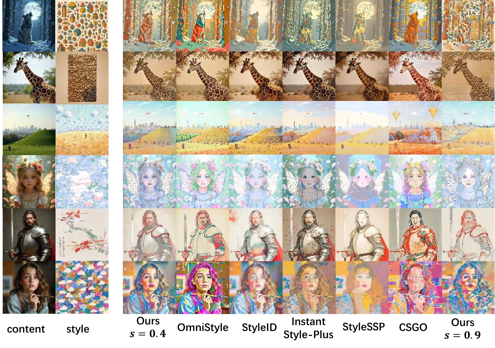
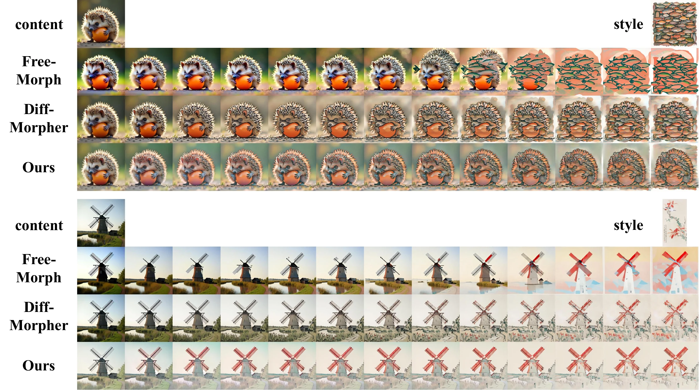

Stylization Quality
At both moderate strength (s = 0.4) and stronger stylization (s = 0.9), our method better preserves content structure while transferring global color palettes and fine local patterns from the style reference.

Continuous Image Stylization with Smooth Transitions
Shanghai Jiao Tong University
Recent advances in generative models have achieved remarkable performance in text- and image-conditioned editing. However, preserving the content of a given image while referencing style patterns from another remains challenging, often leading to uncontrollable stylization results. In this paper, we approach image stylization from the perspective of continuous control, aiming to enable modern Diffusion Transformer (DiT)-based multi-reference editing models to faithfully preserve the semantic structure of the content image, render strong stylization effects, and smoothly transition between the two.
We propose a simple yet effective two-stage training strategy together with a style-strength-aware spline formulation. The model first learns a strongly stylized endpoint while preserving content semantics. With the base model frozen, lightweight anchor projectors then map discrete stylization strengths into a low-rank parameter space. At inference time, strength-aware spline interpolation enables precise, continuous control over stylization strength while maintaining high-fidelity results.
We evaluate stylization quality with content FID, style FID, LPIPS, ArtFID, CLIP image similarity, and style loss. Lower values are better for every metric except CLIP-I. Experiments use QwenImage unless otherwise specified.
| Method | c-FID ↓ | s-FID ↓ | LPIPS ↓ | ArtFID ↓ | CLIP-I ↑ | SL ↓ |
|---|---|---|---|---|---|---|
| StyleID | 118.91 | 188.48 | 0.4517 | 275.06 | 0.8671 | 6.0182 |
| StyleSSP | 109.10 | 186.64 | 0.4787 | 277.47 | 0.8553 | 6.0903 |
| CSGO | 140.77 | 174.50 | 0.6008 | 280.94 | 0.7954 | 9.0661 |
| InstantStyle-Plus | 86.43 | 202.21 | 0.3486 | 274.05 | 0.9115 | 7.4530 |
| FLUX + OmniStyle | 123.35 | 181.90 | 0.5404 | 281.74 | 0.8546 | 6.9905 |
| FLUX + Ours | 91.32 | 188.09 | 0.3448 | 254.29 | 0.9030 | 4.6925 |
| QwenImage | 125.91 | 165.74 | 0.5881 | 264.81 | 0.7883 | 7.4404 |
| QwenImage + Ours | 65.95 | 165.67 | 0.3246 | 220.79 | 0.9241 | 4.9693 |
At both moderate strength (s = 0.4) and stronger stylization (s = 0.9), our method better preserves content structure while transferring global color palettes and fine local patterns from the style reference.

Morphing baselines require a ground-truth stylized endpoint. Our method instead generates a continuous path directly from the content and style references, progressively injecting style while retaining more stable content semantics.

@article{xu2026staying,
title={Staying True to the Origin: Continuous Image Stylization with Smooth Transitions},
author={Xu, Rui and Zhang, Hanmo and Liu, Songhua},
journal={arXiv preprint},
year={2026}
}